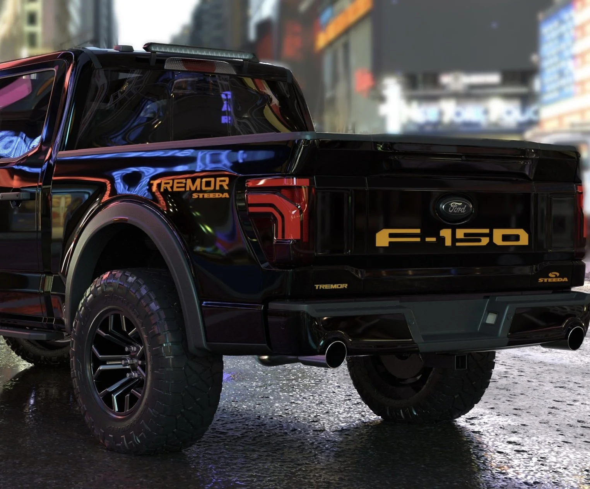

Work Ready
Work ReadyXL
The simple, durable entry point: vinyl options, practical tech, and the right fit for fleets, work crews, and budget-minded buyers.
- Best for: work truck use
- Strength: value and simplicity
- Upgrade path: STX/XLT styling and tech
Trim Breakdown
Use this page as the main research hub for what each trim is for, what it adds, and who should buy it.
Work ReadyThe simple, durable entry point: vinyl options, practical tech, and the right fit for fleets, work crews, and budget-minded buyers.
 Daily Pick
Daily PickThe sweet spot for many drivers because it blends affordability, chrome or sport styling, better cabin features, and useful daily comfort.
 Tech + Comfort
Tech + ComfortA premium middle trim with major comfort upgrades, stronger technology, leather-trimmed feel, and a more upscale cabin experience.

Trail BuiltDesigned for people who want real off-road hardware without jumping all the way to the Raptor price and performance category.
 Western Luxury
Western LuxuryA luxury truck with signature interior styling, comfort features, and a more distinct personality than a standard premium trim.
 Executive
ExecutiveA high-end street-focused trim aimed at buyers who want comfort, technology, towing confidence, and a polished daily-driving experience.
 Desert Monster
Desert MonsterThe performance halo truck with wide-body styling, serious suspension, aggressive stance, and a completely different mission than normal trims.
| Trim | Main Purpose | Best Buyer | Why It Matters |
|---|---|---|---|
| XL | Work and value | Fleet, contractor, first truck | Least expensive way into an F-150 with real capability. |
| XLT | Balanced daily truck | Most normal drivers | Better comfort and appearance without jumping into luxury pricing. |
| Lariat | Premium daily | Commuter who still tows | Adds a more upscale cabin and stronger technology feel. |
| Tremor | Off-road utility | Hunting, camping, trail use | More capable off pavement without Raptor-level cost. |
| King Ranch | Western luxury | Luxury buyer wanting style | Unique interior identity and premium comfort. |
| Platinum | Executive luxury | High-end street truck buyer | Clean, premium, technology-heavy F-150. |
| Raptor | Performance off-road | Enthusiast | Wide body, suspension, stance, and performance personality. |